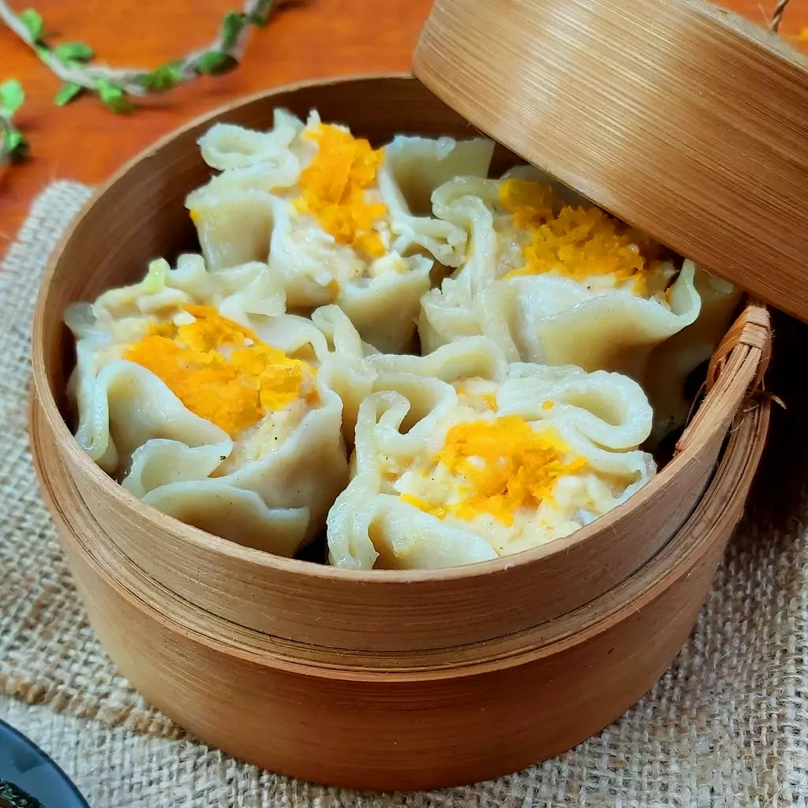

Back
Dimsum Ayam

Dimsum Ayam
Dimsum ayam juga bisa menjadi salah satu menu camilan lezat yang menyehatkan dan mengenyangkan. Ini karena olahan tersebut menggunakan bahan yang kaya nutrisi, seperti udang, ayam, dan telur. Meski kalorinya tidak terlalu tinggi, tetap saja kamu sebaiknya tidak mengonsumsi makanan ini secara berlebihan.
Berikut ini adalah resepnya :
Bahan:
- 500 gram ayam fillet (gunakan bagian paha).
- 150-200 gram udang, kupas kulitnya.
- 2-3 sdm tepung tapioka.
- 1 butir telur.
- 2 batang daun bawang, iris tipis.
- 1 sdm minyak wijen.
- 1 sdt gula pasir.
- 2 sdm saus tiram.
- 1 sdt garam atau kecap asin.
- 2 siung bawang putih.
- 1 sdt lada bubuk.
- Kulit (bisa menggunakan kulit pangsit).
Cara Membuat :
- Langkah resep dimsum ayam pertama, masukkan daging ayam, udang, dan bawang putih dalam blender atau food processor, giling kasar.
- Selanjutnya, siapkan juga serutan wortel pada wadah, sisihkan.
- Kemudian, pindahkan adonan ke wadah, lalu campurkan semua bahan dengan telur. Lalu, uleni hingga semua bahan tercampur rata.
- Terakhir, masukan tepung tapioka, aduk dengan spatula sampai tercampur rata.
- Siapkan kulit pangsit, masukkan adonan dan beri topping wortel parut.
- Selanjutnya, siapkan kukusan yang sebelumnya sudah kamu panaskan. Oles bagian dasarnya dengan minyak goreng.
- Kukus selama sekitar 5 menit, lalu berikan olesan minyak pada bagian pinggir kulitnya. Kemudian, kukus kembali sampai matang.